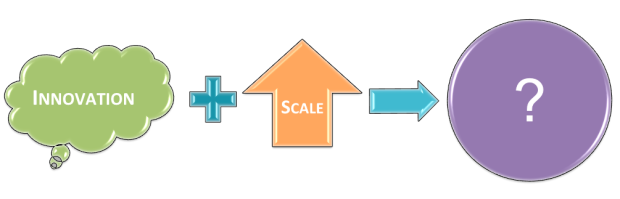

Four years ago, in his 2010 annual letter, Bill Gates said, “If we project what the world will be like 10 years from now without innovation in health, education, energy, or food, the picture is quite bleak.” There has been a surge in international development to begin emphasizing innovation. We’ve seen this with the creation of USAID’s Development Innovation Ventures, Gates Foundation’s Vaccine Innovation Award, multiple Grand Challenge Awards, and dedicated ‘Innovation Teams’ within organizations like UNICEF. Yet, the last year after Gates’ statement, the community began to see attention flip to a potentially conflicting emphasis on ‘achieving lasting impact at scale’ with a convening hosted by the Bill & Melinda Gates Foundation. This question of focusing on driving innovation vs. scaling what works is a management conflict written about in The Innovator’s Dilemma.
Dimagi is facing a unique chapter ahead where scaling what works and continually innovating are both central to our mission and growth. The general idea of mHealth is decidedly un-innovative at this point. In fact, recent innovation RFPs specifically call out that standard mHealth ideas will not be competitive. Saving Lives at Birth’s most recent RFA stated that they will not fund “mHealth approaches that do not offer transformational improvements or expansion compared with current practices or address how to move towards integration of multiple information systems into one solution”.
Many mHealth projects have clearly demonstrated that mHealth tools work and that frontline workers will use them. What hasn’t been proven is how mHealth can be done at scale and if there is valuable (and cost-effective) impact over the long-run. For us, the challenge is that there is still an immense amount of innovation to do, but we are rapidly trying to scale at the same time. These efforts typically start to diverge and it becomes difficult to manage internally, getting harder and harder to bring these efforts back together. Converging was easier when we were small and could quickly share ideas with all 5 or 15 people in the company, but now we need more rigor and discipline as we continue to grow. Instrumental to our success, the people who are attracted to Dimagi naturally want the autonomy to innovate. Within a framework that enables accelerated scale-up of our services and technologies, we want to facilitate rapid innovation
Traditionally, successful companies face an inevitable challenge while scaling. By investing in expanding successful business (focusing on current customers, investing resources into building higher-performing products, being data driven) companies say no to innovative ideas that would divert those resources. This exposes them to the risk of eventually being disrupted by seeming non-competitors providing more value in smaller, lower-end markets, with cheaper, simpler and more convenient products. While they are initially not-competing, these companies can grow to disrupt a leading company’s place in their own market. The question seems natural - if you consistently do well and enjoy high profits, why would you emphasize innovation for less reward?
This narrates a story of companies motivated by profits, who allocate current resources to create future profits. So, as a social enterprise and benefit corporation, how does this apply? What is the social innovator’s dilemma? Still a young space, social enterprises aren’t necessarily influenced by the threat of new competitors or driven by the potential for higher profits, but instead weigh how to maximize resources (revenue) to make the most positive social impact. I’ve come to see that the social innovator’s dilemma is actually that companies start to get revenue from somewhere. Well-run, high-performing social enterprises lose their flexibility to innovate or change course once they get established revenue streams, like those operating within the big aid model. The risk isn’t necessarily new competitors entering the lower end of the market, since there’s room for multiple social innovations; rather, a company’s capacity to innovate would be higher if they could operate in a more efficient market than big aid.
We are scaling more innovations than ever across the organization. We have demonstrated that our technology works for frontline workers, and now we need to demonstrate that our technology and services create value at scale across numerous frontline programs, and continue to increase that value-created over time. As we do that, we are building out new technologies to support logistics, analytics, and performance feedback, which create additional value for our existing partners.
In addition, Mohini and our India team are exploring ways to create additional value at the individual user level, using our technology not just for service delivery, but for self-learning, self-empowerment, and entertainment. One potential outcome is that we could eventually create enough value directly for the user that we could monetize them directly and offset the cost to our existing partners. The ability for end-users to pay Dimagi directly, in our opinion, is far off in the future. However, we are still investing now to position ourselves for when that market may exist.
It would seem like a poor decision to invest heavily in this market that we don’t believe exists yet, but many of the technology and service innovations that are required to create a good UX are the same that are important for training frontline workers in their core service delivery and our current core business. Therefore, we are trying to align the technology needs that can both support our current business and prepare us for future markets. Not all future innovations can also be applied to current business needs and problems, but as our core technology continues to scale up, we’ve found it happens far more often than we had expected. Therefore, rather than view it as a question of innovation or scale, we will attempt to align innovation and scale.